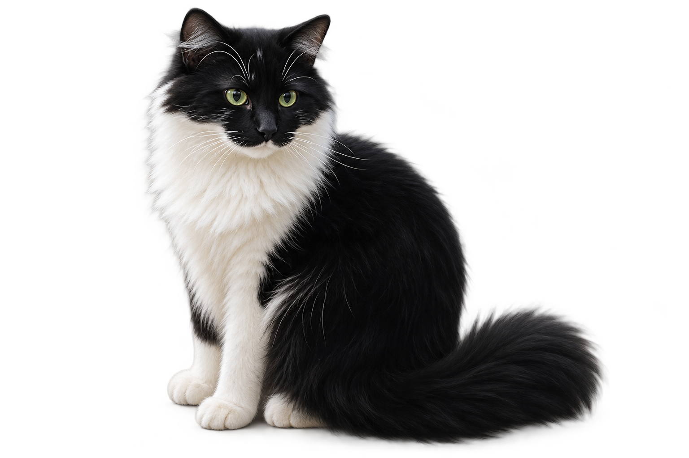

ESCAPE ROOM · ТЕМИ 01–04
Буч 2.0: Лабораторія проєктів
Буч цілий рік вивчав Python. Тепер він хоче створювати справжні проєкти! Чотири системи лабораторії заблоковані. Допоможіть Бучу, обираючи стратегії, виправляючи код і збираючи власні ідеї.
За помилки XP не знімаються. Винагороджуються уважність, спроби виправити код і нові рішення.